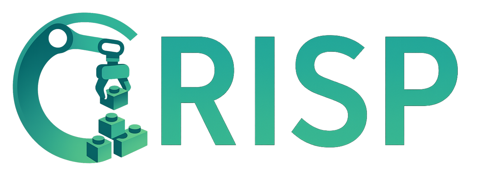
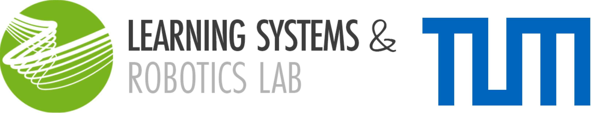
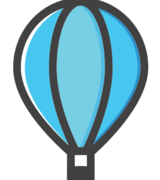
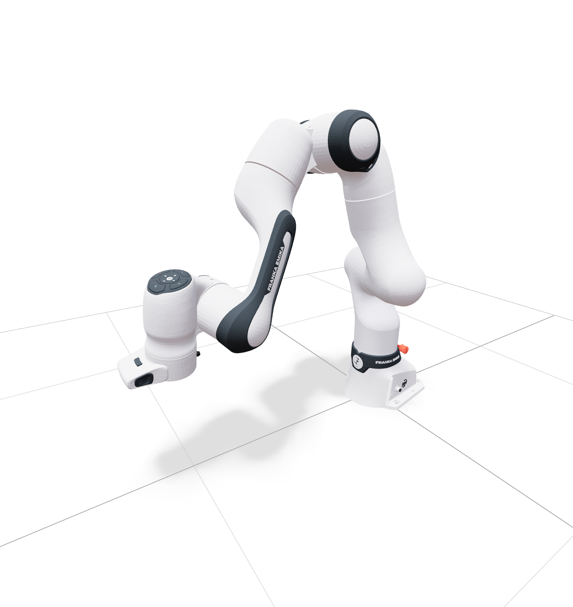
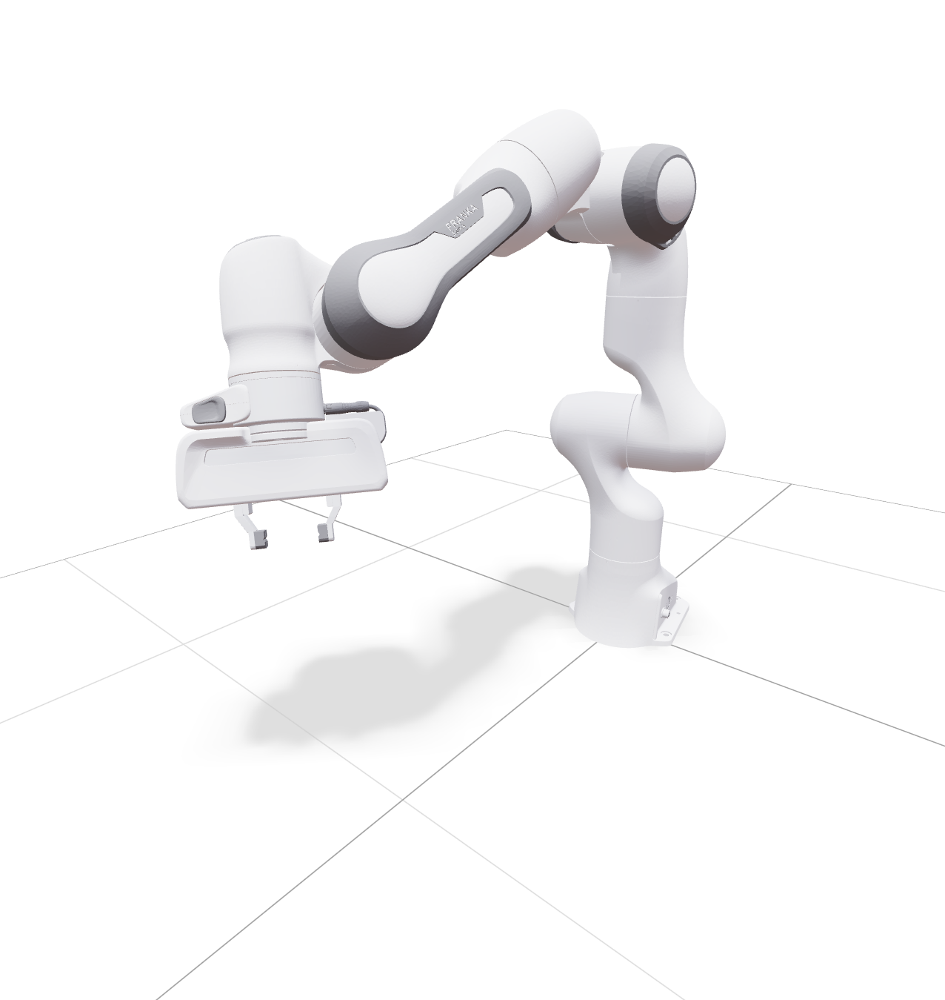
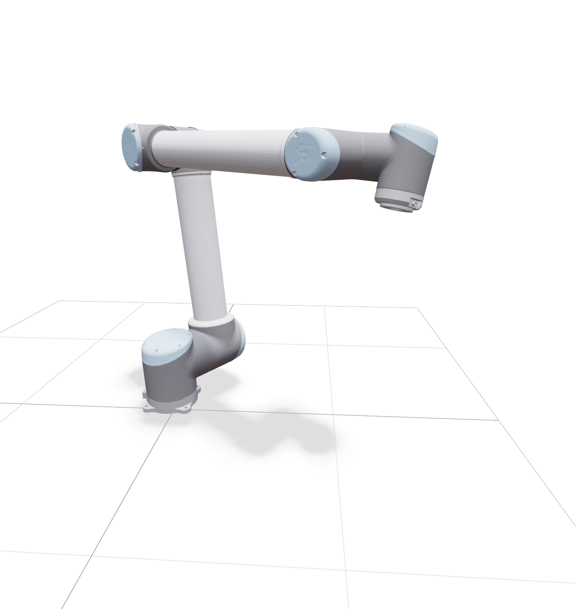
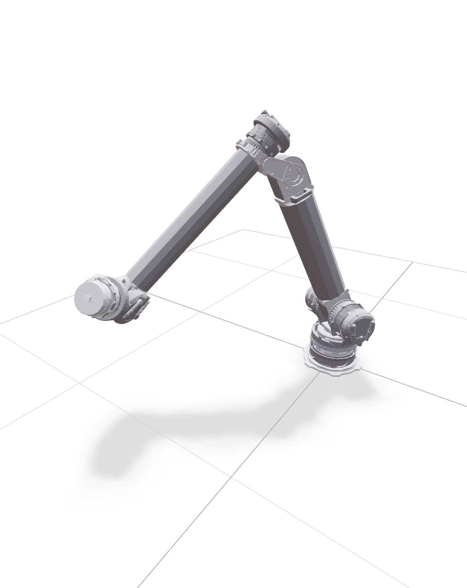

Compliant ROS2 Controllers for Learning-Based Manipulation Policies
Daniel San José Pro
with Oliver Hausdörfer, Ralf Römer, Maximilian Dösch, Martin Schuck and Angela Schoellig
 IEEE RAP 2026
IEEE RAP 2026CRISP provides the low-level controller layer for learning-based manipulation.
1 Real-time controllers
Compliant, robot-agnostic, torque-based ros2_control controllers running in real time on any manipulator with a joint-level effort interface.
2 One Python box
crisp_py and crisp_gym send target poses, joints, and wrenches, deploy Gymnasium and LeRobot policies, and collect synced episodes in LeRobotDataset format.
Stay smooth and compliant on sparse, low-frequency commands.
- Low-frequency input: sparse targets, poses, joints, or short action chunks.
- High-frequency control: the controller closes the fast torque loop and keeps contact compliant.
- No planning required: send simple commands and the controller fills in the rest.
The missing block: a controller that just tracks a stream of poses, compliantly.
Sense
Plan

Nav2Act
Policy
Controller
Drive a joint to a target angle with torque control
- A stiffness gain Kp pulls the joint toward its goal angle.
- A damping gain Kd settles the motion without overshoot.
- Turn gravity on and the joint sags below its target: nothing in this law holds it up.
- Task-space control next is the same idea, lifted into Cartesian space.
torque commanded to a single joint = KpKp
joint stiffness gain: how hard the joint is pulled toward its target angle (qdesq_des
desired joint angle − qq
measured joint angle) − KdKd
joint damping gain: resists joint velocity so the motion settles smoothly, without overshoot q̇q̇
joint velocity
learnsyslab.github.io/crisp_controllers · getting started
Turn end-effector forces in joint torques
- Ask for a Cartesian force F.
- Jᵀ maps that force into joint torques.
joint torques sent to the robot = JTJ
geometric Jacobian from joint motion to end-effector motion. Cartesian impedance uses it directly; operational-space control also folds in the task-space inertia Λ FF
desired end-effector force, chosen in the direction of the task-space error
Turn cartesian space targets in proper joint torques
torque term that solves the Cartesian tracking task = JTJ
geometric Jacobian. Cartesian impedance (CIC) uses it directly; operational-space control (OSC) folds in the task-space inertia matrix Λ. J can carry either. (KpKp
stiffness gain in task space ee
pose error = X_target ⊖ X_current, the SE(3) difference between the desired and measured end-effector pose (translation and rotation handled separately) + KdKd
damping gain in task space ėė
rate of the pose error. In practice this is the −end-effector velocity, which equals −J·q̇) e = Xtarget ⊖ Xcurrent ė = −J q̇
Low stiffness
Less reactive, more compliant. Gentle, forgiving contact.
High stiffness
More reactive tracking, but larger forces and sharper accelerations against contact.
Keep the same end-effector goal, but ask for a better elbow configuration.
final torque command = τtaskτtask
task-space tracking torque + N(q)N(q)
nullspace projector that preserves the main end-effector task KnsKns
nullspace posture gain ( qtargetq_target
preferred joint posture the arm is biased toward − qq
current joint state )
The deployed controller is a sum of torque terms, all fully parametrizable
Task tracking stays central. Around it we layer posture, model-based compensation, and interaction terms. A safety function then clamps the whole sum before it reaches the robot.
final torque command sent to the robot = fsafetyf_safety
not another added term but a function over the whole sum. Clamps the total torque to the configured torque and rate limits before it reaches the robot ( τtaskτtask
main Cartesian task-space tracking term + τnullτnull
the nullspace posture term from the previous slide, reused here unchanged + τjointτjoint
joint regularization, barriers, and limit handling + τmodelτmodel
gravity, Coriolis, and friction compensation from the robot model + τwrenchτwrench
interaction or force-feedback term for teleoperation/contact )
The operator feels the contact the robot makes.
torque applied to the leader so the operator feels the follower's contact = −kp,fbk_p,fb
force-feedback gain: how strongly follower contact is reflected to the leader JTJᵀ
leader Jacobian, mapping the reflected Cartesian force into leader joint torques FfollowerF_follower
contact force-torque measured at the follower's end-effector −kd,fbk_d,fb
damping on the leader that keeps the coupled leader-follower loop stable q̇leaderq̇_leader
leader joint velocity
Leader → follower
Pose streams over target_pose at ~30 Hz; the follower's CI controller does the tracking.
Follower → leader
The measured contact wrench is reflected as force feedback. Contact is felt, not guessed.
The compliant controller plugs straight into the robot.
Policy
learned actions
Human
teleop, demos
crisp_py
crisp_gym
one interface: control + data
Recorder
logs from the same boundary
Controller
task-space torque
Broadcaster
publishes state + streams
Robot
hardware loop,
contact & sensing
Activates the robot and starts broadcasting joint & cartesian states.
crisp_py and crisp_gym are the shared interface for people, policies, and recording.
Policy
learned actions
Human
teleop, demos
crisp_py
crisp_gym
one interface: control + data
Recorder
logs from the same boundary
Controller
task-space torque
Broadcaster
publishes state + streams
Robot
hardware loop,
contact & sensing
Collect synced episodes, or log everything and align it later.
Policy
learned actions
Human
teleop, demos
crisp_py
crisp_gym
one interface: control + data
LeRobotDataset
synced, training-ready
Timestamped data
e.g. MCAP, aligned later
Controller
task-space torque
Broadcaster
publishes state + streams
Robot
hardware loop,
contact & sensing
Pros
- No post-processing just to align sensors, actions, and targets.
- Collection already matches training and deployment semantics.
- Record any stream, tool, or debug signal you want.
- Fits classic robotics logging with few constraints up front.
Cons
- Less flexible than logging every stream in its own format.
- You commit to the dataset structure earlier.
- Alignment and shaping move to a later post-processing step.
- Collection and training semantics drift apart more easily.
Open source in practice
Contributors
Across crisp_controllers, crisp_py, and crisp_gym.
A lot happened after open-sourcing: new robots, PRs, Papers…



UR
DynaArmInfluential merged PRs
Related work using CRISP
- Failure prediction at runtime for generative robot policies
- CLARE: Continual Learning for Vision-Language-Action Models via Autonomous Adapter Routing and Expansion
- SQ-CBF: Signed Distance Functions for Numerically Stable Superquadric-Based Safety Filtering
- From Demonstrations to Safe Deployment: Path-Consistent Safety Filtering for Diffusion Policies
- Enabling Dynamic Tracking in Vision-Language-Action Models via Time-Discrete and Time-Continuous Velocity Feedforward
General Learnings
- Real-hardware evaluation is the bottleneckResets, supervision, timing bugs, and environment drift decide whether a success rate means anything.
- Data collection is the controller problem tooCleaner demos and repeatable setup moved the Lego task from roughly 20% to 80% success.
Thank you.
Questions?
Give it a try! Fork it, test it and share your deployments.